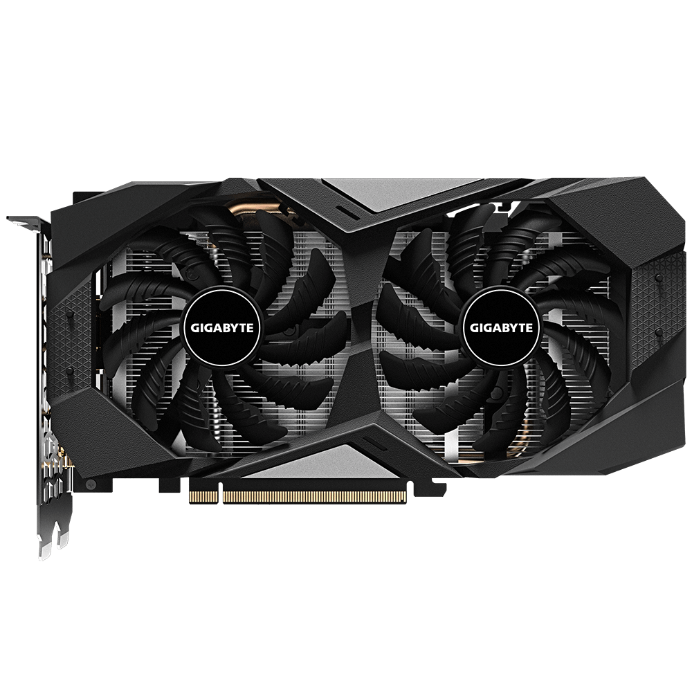

Investigación: Tarjetas Gráficas (GPU)
1. Arquitectura: CPU vs. GPU

Arquitectura: Mientras que el CPU es un procesador de propósito general con pocos núcleos muy rápidos diseñados para tareas secuenciales, la GPU es un "especialista" en procesamiento paralelo masivo. Está equipada con miles de núcleos pequeños (CUDA Cores en NVIDIA o Stream Processors en AMD), lo que le permite realizar miles de cálculos matemáticos simultáneos, ideal para renderizar gráficos complejos o ejecutar modelos de Inteligencia Artificial.